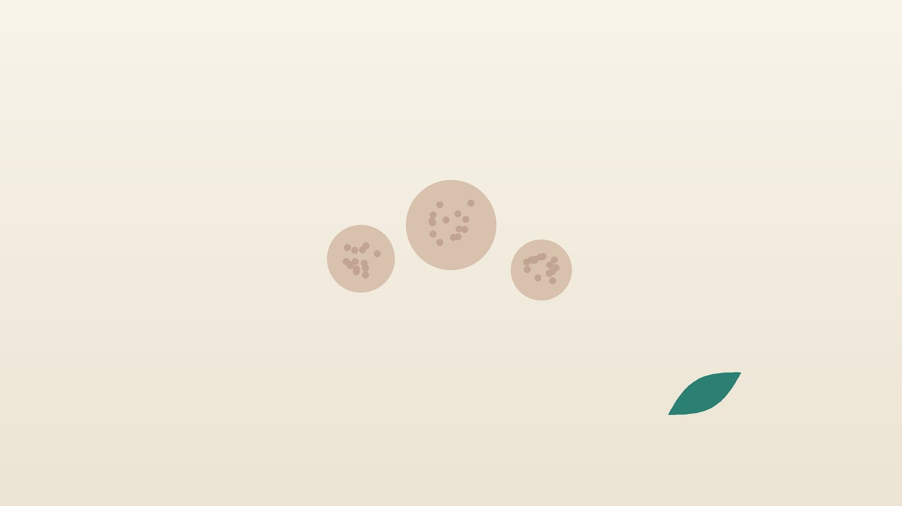

건강 칼럼 · 한방피부과
손발에 오돌토돌한 사마귀가 번진다면, 사마귀 한방 관리

이런 모습인가요?
- 손가락, 손톱 주변에 표면이 거칠고 단단한 돌기가 있다
- 발바닥에 굳은살 같은 것이 있는데 걸을 때 아프고 속에 검은 점이 보인다
- 얼굴이나 손등에 납작하고 살색인 작은 돌기가 여러 개 생겼다
- 하나였던 것이 주변으로 점점 늘어난다
- 손톱으로 뜯거나 면도한 자리에 줄지어 생겼다
- 치료하고 나서 같은 자리나 다른 곳에 다시 생겼다
이 체크리스트는 진단 도구가 아니라 상담이 필요한지 가늠해 보는 참고용입니다.
사마귀는 왜 생기고, 물사마귀와는 어떻게 다른가요?
사마귀는 사람유두종바이러스(HPV)가 피부 표면에 감염되어 생깁니다. 손발에 생기는 보통 사마귀, 체중이 실려 안으로 파고드는 발바닥 사마귀, 얼굴과 손등에 납작하게 생기는 편평 사마귀가 대표적입니다. 수영장 바닥, 손톱 물어뜯기, 면도처럼 작은 상처가 생기는 환경에서 잘 옮고, 아토피 피부염이나 면역이 떨어진 분에게서 많이 생깁니다. 발바닥 사마귀는 티눈과 비슷해 보이지만, 표면을 깎으면 작은 혈관이 막혀 생긴 검은 점들이 보이고 피부 결(지문)이 끊기는 점이 다릅니다.
물사마귀(전염성 연속종)는 HPV가 아닌 폭스바이러스 계열이 원인이며, 가운데가 배꼽처럼 들어간 반짝이는 작은 구슬 모양으로 아이들 몸통과 팔다리, 겨드랑이에 잘 생깁니다. 영국피부과학회(BAD) 사마귀 진료지침은 아이들의 사마귀 상당수가 2년 안에 저절로 사라지므로 통증이나 불편이 없다면 지켜보는 것도 선택지라고 하며, 치료가 필요하면 살리실산 바르는 약과 액체질소 냉동치료를 근거가 비교적 탄탄한 방법으로 제시합니다. 냉동치료는 보통 2~3주 간격으로 여러 번 반복합니다.
피부과·비뇨의학과·산부인과가 먼저 필요한 경우
- 생식기, 항문 주변에 돌기가 생겼다 (비뇨의학과·산부인과)
- 돌기가 빠르게 커지거나 피가 나고 색과 모양이 변한다
- 손톱 밑이나 손톱 주변 사마귀가 손톱 모양을 바꾼다
- 얼굴, 특히 눈꺼풀이나 입술에 생겼다
- 장기이식, 항암 치료 등으로 면역억제제를 복용 중이다
- 당뇨가 있는데 발바닥에 생겼다
생식기 사마귀는 성 접촉으로 옮는 HPV 유형이 많아 배우자도 함께 확인하는 것이 좋고, 여성은 자궁경부암 검진도 챙겨야 합니다. 모양이 변하거나 피가 나는 돌기는 다른 피부 종양과 감별해야 합니다.
한의학은 사마귀를 어떻게 보나요?
한의학 고전에서는 피부에 돋는 사마귀를 우(疣)라 하였고, 손발에 생기는 보통 사마귀는 우목(疣目) 또는 오래 간다는 뜻의 천일창(千日瘡), 얼굴의 납작한 것은 편평우(扁平疣)로 구분했습니다. 천 일이라는 이름에서 보듯, 옛사람들도 사마귀가 쉽게 사라지지 않고 오래 머문다는 것을 잘 알고 있었습니다.
원인으로는 바깥의 나쁜 기운(바이러스)이 피부에 들어왔을 때 몸의 방어 기운이 이를 제때 밀어내지 못하고, 그 자리에 습과 열, 뭉친 혈이 맺혀 돌기가 된다고 보았습니다. 그래서 겉에서 사마귀를 없애는 치료와 별개로, 피부의 습열을 걷고 방어력을 북돋워 새로 생기는 것을 줄이는 데 한의학의 역할이 있습니다. 의이인(薏苡仁, 율무)은 습을 빼고 피부의 군살을 삭이는 약재로 사마귀 처방에 오래 쓰여 왔습니다.
나는 어떤 유형일까?
1. 풍열독(風熱毒) 갑자기 여러 개 돋는 유형
- 이런 분에게 많아요
- 얼굴, 손등에 편평 사마귀가 갑자기 늘어난 분
- 나타나는 모습
- 작고 납작한 돌기가 줄지어 생기고 가렵다
- 함께 오는 몸의 신호
- 얼굴 붉어짐, 가려움, 입 마름
- 진찰에서 보이는 모습
- 혀끝이 붉고 맥이 빠름
- 치료 방향
- 열독을 식히고 피부를 진정시키는 방향 (의이인 가감, 마행의감탕 계열)
- 오늘부터 해 볼 것
- 긁거나 짜지 말고 수건을 따로 쓰세요.
2. 습열(濕熱) 축축하고 두꺼운 유형
- 이런 분에게 많아요
- 발에 땀이 많고 발바닥 사마귀가 있는 분
- 나타나는 모습
- 두껍고 거친 돌기가 발바닥, 발가락에 생긴다
- 함께 오는 몸의 신호
- 발 냄새, 무좀, 몸이 무거움
- 진찰에서 보이는 모습
- 설태가 누렇고 끈적함
- 치료 방향
- 습과 열을 걷어 피부를 건조하게 하는 방향 (의이인 중심 처방)
- 오늘부터 해 볼 것
- 양말을 하루 두 번 갈아 신고 발을 잘 말리세요.
3. 기혈어체(氣血瘀滯) 오래 굳은 유형
- 이런 분에게 많아요
- 몇 년째 같은 자리에 단단한 사마귀가 있는 분
- 나타나는 모습
- 크고 단단하며 색이 어둡고 치료해도 잘 남는다
- 함께 오는 몸의 신호
- 손발 차가움, 피부 거칠함
- 진찰에서 보이는 모습
- 혀가 어둡고 맥이 껄끄러움
- 치료 방향
- 막힌 혈을 풀어 굳은 돌기를 삭이는 방향 (도홍사물탕 계열 가감)
- 오늘부터 해 볼 것
- 손톱으로 뜯는 습관을 끊으세요.
4. 정기허(正氣虛) 약해서 재발하는 유형
- 이런 분에게 많아요
- 아토피가 있거나 자주 아프고 지친 아이·어른
- 나타나는 모습
- 치료해도 다른 자리에 계속 새로 생긴다
- 함께 오는 몸의 신호
- 잦은 감기, 피로, 식욕 저하
- 진찰에서 보이는 모습
- 혀가 담백하고 맥이 약함
- 치료 방향
- 방어 기운을 북돋우는 방향 (옥병풍산·보중익기탕에 의이인 가미)
- 오늘부터 해 볼 것
- 잠을 충분히 자고 끼니를 거르지 마세요.
한의원에서는 어떻게 진찰하나요?
- 병변 살피기: 위치, 개수, 크기, 표면 모양을 보고 물사마귀·티눈·다른 피부 질환과 구분합니다. 애매하면 피부과 진료를 먼저 안내합니다.
- 치료 이력: 냉동치료, 바르는 약, 레이저를 몇 번 받았는지와 재발 양상을 확인합니다.
- 몸 상태: 아토피, 잦은 감기, 땀, 소화, 수면 상태를 여쭙니다.
- 설진·맥진: 습열, 막힘, 허약의 비중을 판단해 유형을 정합니다.
침·약침·한약 치료는 어떻게 하나요?
1. 침 치료
- 곡지(曲池): 팔꿈치를 굽혔을 때 생기는 가로 주름의 바깥쪽 끝. 피부의 열을 식힙니다.
- 합곡(合谷): 손등 엄지와 검지 뼈 사이. 얼굴과 손의 피부 증상에 씁니다.
- 혈해(血海): 허벅지 안쪽, 무릎뼈 위 모서리에서 세 손가락 너비 올라간 곳. 혈의 흐름을 돕습니다.
- 족삼리(足三里): 무릎 아래 바깥쪽 손가락 네 마디 내려간 곳. 몸의 기운을 북돋웁니다.
- 음릉천(陰陵泉): 무릎 안쪽 정강이뼈 아래 오목한 곳. 습을 빼 줍니다.
사마귀 자체를 침으로 찌르지는 않습니다. 몸의 상태를 돕는 혈자리 위주로 치료하며, 아이에게는 피부에 붙이는 소아 스티커침을 씁니다. 임신 중인 분에게는 합곡처럼 피해야 하는 혈자리는 자극하지 않습니다.
2. 약침
약침을 시행합니다. 성인에게 면역과 피부 순환에 관련된 팔다리의 경혈에 적용할 수 있으며, 사마귀 병변에 직접 놓지는 않습니다. 어린이에게는 약침을 쓰지 않습니다.
3. 한약
의이인을 중심으로 유형에 맞춘 탕약을 씁니다. 의이인이 사마귀에 도움이 되었다는 보고는 주로 작은 규모의 연구여서, 피부과 치료와 함께 재발을 줄이는 쪽으로 기대하는 것이 현실적입니다. 아이 약은 쓴맛이 덜한 약재를 골라 짓고, 먹기 힘들어하면 집에서 단것을 조금 섞어 주셔도 괜찮습니다. 다만 돌이 지나지 않은 아기에게 꿀은 주지 마세요. 의이인은 임신 중에는 피하는 약재이므로, 임신 중이거나 계획 중이라면 진료 때 꼭 알려 주세요. 확인 후 안전한 약재로 처방합니다.
치료는 어떤 순서로 진행되나요?
- 감별 사마귀인지, 물사마귀·티눈·다른 종양인지 먼저 구분합니다.
- 피부과 치료 병행 냉동치료나 바르는 약을 받는 중이라면 그 일정을 유지합니다.
- 4~8주 탕약과 침 치료로 새로 생기는 개수와 크기 변화를 살핍니다.
- 경과 확인 사진으로 개수를 비교하며 처방을 조정하고 재발 습관을 정리합니다.
사마귀는 몇 주에서 몇 달에 걸쳐 변화가 나타나는 경우가 많아, 같은 각도의 사진으로 개수와 크기를 기록하며 경과를 봅니다.
옮기지 않고 재발을 줄이는 생활 관리
- 뜯지 않기: 손톱으로 뜯거나 물어뜯으면 손가락과 입 주변으로 번집니다.
- 개인 물품: 수건, 손톱깎이, 발 각질 제거기는 따로 쓰고, 쓴 뒤 씻어 말립니다.
- 맨발 주의: 수영장, 목욕탕, 탈의실에서는 슬리퍼를 신습니다.
- 면도: 사마귀가 있는 부위는 면도를 피하거나 전기면도기를 씁니다.
- 발 건조: 땀이 많으면 양말을 자주 갈아 신고 발가락 사이까지 말립니다.
다른 진료가 함께 필요한 경우
- 생식기·항문 주변 돌기는 비뇨의학과나 산부인과에서 진료받으세요. 여성은 자궁경부암 검진도 함께 챙기세요.
- 크기·색·모양이 빨리 변하거나 피가 나면 피부과에서 조직 검사를 상담하세요.
- 가운데가 들어간 구슬 모양이라면 물사마귀일 수 있어 피부과 진료가 필요합니다.
- 당뇨나 혈액순환 장애가 있다면 발 사마귀를 집에서 깎지 말고 진료를 받으세요.
자주 묻는 질문 Q&A
- Q1. 사마귀는 옮나요?
- 네. 직접 닿거나 수건·손톱깎이를 함께 쓰면 옮을 수 있고, 내 몸의 다른 부위로도 번집니다.
- Q2. 물사마귀와 사마귀는 같은 건가요?
- 원인 바이러스가 다르고 모양과 치료도 다릅니다. 물사마귀는 가운데가 배꼽처럼 들어간 작은 구슬 모양입니다.
- Q3. 티눈인지 사마귀인지 어떻게 알아요?
- 사마귀는 깎으면 작은 검은 점이 보이고 지문이 끊깁니다. 헷갈리면 진료로 확인하세요.
- Q4. 냉동치료와 한약을 같이 해도 되나요?
- 함께 할 수 있습니다. 피부과 치료로 보이는 것을 없애고, 한약으로 몸 상태를 돌보는 방식입니다.
- Q5. 율무차를 마시면 사마귀가 없어지나요?
- 율무는 처방 약재로 쓰이지만 차로 마시는 양과 효과는 다릅니다. 임신 중에는 피하는 것이 좋습니다.
- Q6. 아이도 침을 맞아야 하나요?
- 아이에게는 약침을 쓰지 않고 피부에 붙이는 소아 스티커침과 쓴맛이 덜한 탕약으로 관리합니다.
- Q7. 사마귀를 그냥 두면 어떻게 되나요?
- 아이는 저절로 사라지기도 하지만 늘어나거나 아프면 치료하는 것이 좋습니다.
- Q8. 생식기 사마귀도 한의원에서 보나요?
- 생식기 사마귀는 비뇨의학과나 산부인과 진료가 먼저입니다.
참고 자료
- Sterling JC, et al. British Association of Dermatologists' guidelines for the management of cutaneous warts 2014. British Journal of Dermatology, 2014 — 원문
- 질병관리청 국가건강정보포털 — 원문
※ 이 글은 일반적인 건강 정보이며, 개인의 상태에 따라 치료 방법과 결과는 다를 수 있습니다. 정확한 진단과 치료는 진료를 통해 결정됩니다. 침·약침 시술 후 드물게 멍, 통증 등이 생길 수 있습니다.